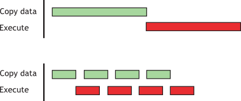
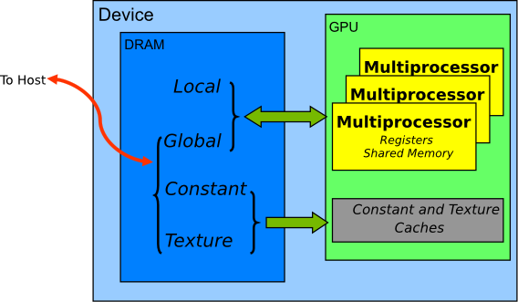
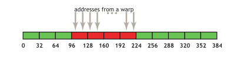
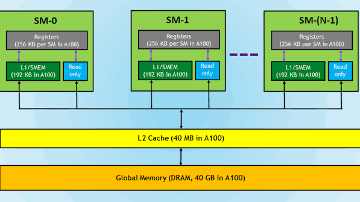
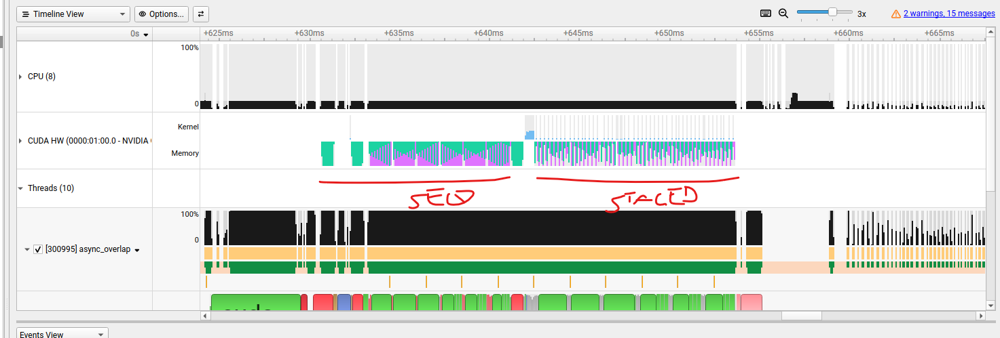

Learning outcomes
Scope
This module focuses on practical memory optimization: reducing unnecessary host-device transfers, using pinned memory and streams intentionally, overlapping work when possible, and choosing memory spaces that reduce expensive global-memory traffic.
1. Memory Movement and Access Optimization
1.1 Minimizing host-device data movement
A CUDA application is a heterogeneous program: the CPU and GPU have separate execution resources and, in the usual discrete-GPU system, separate physical memories. Moving data between them is therefore part of the application's performance cost. The first memory optimization is not necessarily to make a kernel faster; it is to avoid transfers that do not contribute useful work.
Why transfers matter
Device memory can provide much more bandwidth to GPU kernels than the host-device connection can provide for transfers. A short operation on the GPU may therefore lose its advantage if the program first copies data to the device and immediately copies the result back. Always include host-to-device and device-to-host transfers when the question is end-to-end latency.
Keep intermediate data on the device
When several GPU operations form one pipeline, create intermediate arrays in device memory and leave them there between kernels. Copying each intermediate result to the host and back adds transfer time and can also force synchronization. A kernel that is not faster than its CPU equivalent may still be the better choice if it avoids an extra round trip across the host-device boundary.
host input --copy--> device data --kernel 1--> device intermediate
--kernel 2--> device result
device result --copy--> host outputMake each transfer carry enough work
Every transfer has fixed overhead in addition to the time needed to move its bytes. Batching many small transfers into one larger transfer usually improves throughput, even if the program must first pack the data into a contiguous buffer. The goal is to increase the amount of useful computation performed for every byte transferred.
Reason with the work-to-transfer ratio
A matrix addition performs approximately O(N^2) arithmetic work while moving a quantity of data that is also O(N^2). Matrix multiplication performs approximately O(N^3) arithmetic work for the same order of input data. As the problem grows, the second operation has more work available to amortize the cost of moving its inputs and outputs.
Use this workflow before changing code:
- List every host-to-device and device-to-host transfer.
- Measure transfer time separately from kernel time and total application time.
- Check whether intermediate results can remain in device memory.
- Combine small transfers when the application can process data in batches.
- Estimate whether the amount of parallel work justifies the transfer cost.
- Measure the complete pipeline again after each change.
The practical decision is not “CPU or GPU for this line of code?” It is “where is the data already located, how much work will be performed, and how many transfers will this choice add?”
This section follows NVIDIA CUDA C++ Best Practices Guide, 10.1 Memory Optimizations.
1.2 Using pinned host memory
Pinned memory, also called page-locked memory, is host RAM whose physical pages are prevented from being paged out or moved by the operating system. It is still CPU memory, not VRAM. Its purpose is to provide a stable host buffer that the GPU's DMA engine can use efficiently during host-to-device or device-to-host transfers.
Pageable versus pinned memory
Ordinary host allocations are pageable. Before a transfer can safely use them, the CUDA runtime may need to stage the data through a temporary page-locked buffer. That staging step adds work and can limit transfer throughput. With pinned memory, the buffer is already page-locked, so the runtime can use it directly as the source or destination of the transfer.
Pinned memory is most useful when transfers are large, repeated, or part of a pipeline. It is especially important for cudaMemcpyAsync(), which requires pinned host memory for the host side of an asynchronous transfer.
Allocating pinned memory
Use cudaHostAlloc() when CUDA should allocate the host buffer:
float *host_buffer = nullptr;
cudaHostAlloc(&host_buffer, bytes, cudaHostAllocDefault);
cudaMemcpyAsync(device_buffer, host_buffer, bytes,
cudaMemcpyHostToDevice, stream);
cudaFreeHost(host_buffer);If the application already owns a normal host allocation, cudaHostRegister() can page-lock that existing region temporarily. The allocation and registration APIs have different ownership and lifetime rules, so the matching cleanup operation must be used.
Pinned memory and asynchronous copies
Pinned memory is a prerequisite for the host buffer in a genuinely asynchronous copy. The copy can be enqueued in a stream while the CPU continues with other work, subject to the device, runtime, and stream dependencies:
The reason is that host-device copies are performed by a DMA engine, not by ordinary CPU loads and stores. The DMA engine needs stable physical host-memory pages for the duration of the transfer. Ordinary pageable memory can be moved, remapped, or paged out by the operating system, so the CUDA runtime may need to stage the transfer through a temporary pinned buffer before the device can access it safely. A pinned buffer is page-locked, so its physical pages remain stable and the DMA transfer can proceed while the host thread continues.
cudaHostAlloc(&host_buffer, bytes, cudaHostAllocDefault);
cudaMemcpyAsync(device_buffer, host_buffer, bytes,
cudaMemcpyHostToDevice, stream);
// Other host work may run while the copy is queued.
cudaStreamSynchronize(stream);The final synchronization is needed before the program reuses or frees the host buffer and before it assumes that the transfer is complete.
Use it selectively
Pinning is not automatically faster for every program. Pinning is a relatively heavyweight operation, and page-locked memory is a scarce system resource. Overusing it can reduce overall system performance. Allocate a small number of reusable pinned buffers, measure the complete transfer path, and compare the preparation cost with the transfer-time benefit.
Do not confuse pinned and reserved memory
Pinned memory belongs to the host. Reserved CUDA memory belongs to the GPU and is held by an allocator for reuse. Pinned memory does not increase VRAM capacity and does not replace a strategy for reducing transfers.
Unified Virtual Addressing is related but different: UVA provides a unified way to identify addresses across CPU and GPU address spaces. It does not make ordinary host memory pinned, eliminate transfers, or make every host pointer directly accessible from a kernel.
This section follows NVIDIA CUDA C++ Best Practices Guide, 10.1.1 Pinned Memory.
Practical PyTorch exercise
The transfer benefit and preparation cost are measured in the PyTorch exercise examples/ch08/pytorch_pinned_memory. It compares pageable memory with pinned memory and pinned non-blocking transfers across several buffer sizes, then calculates how many iterations are needed to recover the pinning preparation cost.
1.3 Asynchronous transfers and overlap
A normal cudaMemcpy() is a blocking transfer: the host thread does not continue until the copy has completed. cudaMemcpyAsync() instead enqueues the transfer in a CUDA stream and can return control to the host before the transfer has finished. This makes asynchronous execution possible, but the API call alone does not guarantee a performance improvement or an overlap with computation.
Requirements for a useful asynchronous copy
- The host buffer must be page-locked, or pinned, for the transfer to be genuinely asynchronous on the host side.
- The copy must be submitted to an appropriate stream.
- The host must not reuse, modify, or free the pinned buffer until the copy has completed.
- The GPU must support the required copy and compute concurrency, and the workload must provide independent work that can overlap.
Blocking versus asynchronous submission
cudaMemcpy(device_data, host_data, bytes, cudaMemcpyHostToDevice);
// host waits for completion;
cudaMemcpyAsync(device_data, pinned_host_data, bytes, cudaMemcpyHostToDevice, copy_stream);
// host can continueThe second call only schedules the operation. Completion is established later with an event or stream synchronization. The synchronization must be placed at the point where the program needs the copied data or needs to reuse the host buffer.
Overlap requires independent streams
Operations submitted to one stream execute in order. If a copy and a kernel are placed in the same stream, the stream preserves their order and there is no overlap between those operations. To build a pipeline, use separate streams and divide the input into independent chunks:
cudaMemcpyAsync(device_chunk, pinned_host_chunk, bytes, cudaMemcpyHostToDevice, copy_stream);
processKernel<<<grid, block, 0, compute_stream>>>(device_chunk);
// Synchronize only when the result or buffer is needed.In a real pipeline, the copy for chunk n + 1 can run while the kernel processes chunk n, provided the chunks use independent buffers and the hardware has available copy and compute resources.
Asynchronous does not mean automatically overlapped
Overlap can be prevented by a pageable host buffer, one stream imposing an ordering dependency, a synchronization immediately after every copy, insufficiently large chunks, lack of concurrent copy and execution support, or contention for the same device resources. Always compare a sequential baseline with the pipelined version using a complete end-to-end timer.
Safe buffer lifetime
The host buffer remains in use by the transfer after cudaMemcpyAsync() returns. Use cudaStreamSynchronize(copy_stream) or synchronize an event recorded after the copy before writing to, reusing, or freeing that buffer. The same lifetime rule applies to device buffers that are used by asynchronous kernels or copies.
The optimization target is total pipeline time, not the fact that a function name contains “Async”. A well-designed pipeline reduces idle periods by doing useful host preparation or another transfer while the GPU computes. The benefit must be measured with the same input, output, correctness checks, and warm-up conditions as the baseline.
This section follows NVIDIA CUDA C++ Best Practices Guide, 10.1.2 Asynchronous and Overlapping Transfers with Computation.
1.4 Overlapping computation with data transfer
Host-device transfers and kernel execution are often written as a sequence: copy the input, launch the kernel, copy the result back. This is correct, but it can leave either the copy engine or the GPU's compute units idle. If the GPU supports concurrent copy and compute, independent chunks of work can be staged so that a transfer for one chunk runs while the kernel processes another chunk.

First check the hardware capability
Not every CUDA device can overlap a copy with kernel execution. Query the device properties before designing this optimization. The asyncEngineCount field reports the number of asynchronous copy engines. A value of zero means that the device does not provide asynchronous copy engines for this purpose. One copy engine can generally support one asynchronous transfer while kernels execute; two copy engines can support a host-to-device transfer, a device-to-host transfer, and kernel execution concurrently, subject to resource availability.
cudaDeviceProp prop;
cudaGetDeviceProperties(&prop, 0);
printf("Device: %s\n", prop.name);
printf("Asynchronous copy engines: %d\n", prop.asyncEngineCount);
printf("Can map host memory: %s\n", prop.canMapHostMemory ? "yes" : "no");The property is a capability, not a performance guarantee. The workload must also contain independent chunks, transfers must be large enough to amortize setup costs, and the kernel must leave copy-engine capacity available.
Requirements for concurrent copy and compute
- Use page-locked, or pinned, host memory. A pageable buffer may require an internal staging copy and cannot provide the same asynchronous behavior.
- Use non-default streams for the transfer and kernel. The default stream has ordering rules that can introduce dependencies with other CUDA work.
- Use different streams for operations that are intended to overlap. Operations submitted to one stream execute in order.
- Use separate device buffers, or otherwise establish correct dependencies, so that one chunk is not overwritten while another operation still uses it.
- Synchronize only at real dependency points, such as before consuming the final output or reusing a buffer.
Staged concurrent copy and execute
The following is a compact template. The host buffer is divided into chunks, and each chunk is assigned to one of several non-default streams. While stream i transfers chunk n, another stream may execute the kernel for a previously transferred chunk.
cudaStream_t streams[nStreams];
for (int i = 0; i < nStreams; ++i) {
cudaStreamCreate(&streams[i]);
}
for (int n = 0; n < nChunks; ++n) {
int stream_id = n % nStreams;
char *host_chunk = host_buffer + n * chunk_bytes;
char *device_chunk = device_buffer + n * chunk_bytes;
cudaMemcpyAsync(
device_chunk,
host_chunk,
chunk_bytes,
cudaMemcpyHostToDevice,
streams[stream_id]);
processKernel<<<grid, block, 0, streams[stream_id]>>>(
device_chunk,
chunk_elements);
cudaMemcpyAsync(
host_chunk,
device_chunk,
chunk_bytes,
cudaMemcpyDeviceToHost,
streams[stream_id]);
}
cudaDeviceSynchronize();
for (int i = 0; i < nStreams; ++i) {
cudaStreamDestroy(streams[i]);
}This template shows the structure, but a production implementation needs a dependency mechanism when a stream is reused. CUDA events can record completion of a previous use of a host or device buffer, and cudaStreamWaitEvent() can prevent the next operation from starting too early. With a ring of buffers, the number of buffers should normally match or exceed the number of in-flight chunks.
Mapped pinned host memory and zero-copy access
CUDA can also map pinned host memory into the device address space. In this mode, a kernel accesses host memory directly instead of receiving an explicit cudaMemcpy() into device memory. This is commonly called zero-copy access.
float *a_h = nullptr;
float *a_map = nullptr;
cudaDeviceProp prop;
cudaGetDeviceProperties(&prop, 0);
if (!prop.canMapHostMemory) {
return;
}
cudaSetDeviceFlags(cudaDeviceMapHost);
cudaHostAlloc(
reinterpret_cast<void **>(&a_h),
nBytes,
cudaHostAllocMapped);
cudaHostGetDevicePointer(&a_map, a_h, 0);
kernel<<<gridSize, blockSize>>>(a_map);
cudaDeviceSynchronize();
cudaFreeHost(a_h);The canMapHostMemory property checks whether the device supports this feature. Mapping must be enabled before the CUDA context is created. cudaHostAlloc() allocates page-locked host memory, and cudaHostGetDevicePointer() returns the pointer that device code can use. The kernel can reference the mapped pinned host memory through a_map in exactly the same way as it would reference a location in device memory.
On an integrated GPU, host and device memory may be physically shared, so mapped pinned memory can avoid an unnecessary copy. On a discrete GPU, accesses travel through the host-device interconnect, are not cached in the GPU in the same way as device memory, and can have higher latency and lower bandwidth. It is therefore most suitable for data that is read or written once, with coalesced accesses, or for cases where avoiding an explicit copy is more important than maximizing bulk bandwidth. Repeated access usually benefits from copying the data to device memory and reusing it there.
There are two distinct optimization patterns:
- Overlapping transfers with computation: copy data into device memory asynchronously, then use non-default streams to overlap the copy of one chunk with computation on another.
- Mapped pinned memory: leave the data in host memory and let the kernel access it directly, avoiding an explicit copy but accepting host-memory access cost.
Both patterns are conditional optimizations. They require a capability check, correct buffer lifetime management, and an end-to-end measurement against a simple sequential baseline. The relevant practical comparison is whether the complete workload finishes sooner, not whether the code contains more asynchronous API calls.
For the guided implementation, use the examples/ch08/pytorch_pinned_memory experiment to measure the pinned-buffer transfer behavior, and extend the same measurement discipline to a chunked multi-stream pipeline.
This section follows NVIDIA CUDA C++ Best Practices Guide, 10.1.2 Asynchronous and Overlapping Transfers with Computation.
1.5 Choosing the most suitable CUDA memory space
CUDA provides several memory spaces because data differs in scope, lifetime, visibility, capacity, latency, and bandwidth. Choosing where a value lives is part of the kernel design: it determines which threads can access it and how much traffic must cross the most expensive memory paths.

The main spaces have different trade-offs:
| Memory space | Location | Access | Scope | Lifetime | Typical use |
|---|---|---|---|---|---|
| Registers | On-chip | Read/write | One thread | Thread | Frequently used private scalars, indices, and partial results. |
| Local memory | Device memory | Read/write | One thread | Thread | Private data that cannot remain in registers, such as spills or large automatic arrays. |
| Shared memory | On-chip | Read/write | All threads in one block | Block | Cooperation, tiling, and reuse of values loaded from global memory. |
| Global memory | Device memory | Read/write | All threads and the host | Host allocation | Large input, output, and intermediate arrays shared across kernel launches. |
| Constant memory | Device memory | Read-only from kernels | All threads and the host | Host allocation | Small values initialized by the host and reused by many threads. |
| Texture memory | Device memory | Read-only | All threads and the host | Host allocation | Specialized cached read patterns, especially spatial or lookup-oriented access. |
How to choose
Keep a value in a register when it is private and frequently used. Use shared memory when threads in one block reuse the same data. Use constant memory for small read-only values with suitable access patterns. Use global memory for large arrays that must be visible across blocks or kernel launches. Treat local memory as a sign that register use, automatic arrays, or compiler spills deserve inspection: despite its name, local memory is backed by device memory and is not an on-chip cache.
The goal is not to put everything in the fastest space. On-chip spaces are limited and private to particular execution scopes. A good design places each value where its sharing pattern requires it, then reduces expensive global-memory traffic through reuse and efficient access.
This section follows NVIDIA CUDA C++ Best Practices Guide, 10.2 Device Memory Spaces.
1.6 Coalesced global-memory access
Global memory is served through memory transactions. A warp does not usually cause one independent transaction per thread; instead, the hardware groups the addresses requested by the active lanes and fetches the memory segments that contain them. An access pattern is coalesced when neighboring threads in a warp access neighboring, properly aligned words, so a small number of transactions supplies useful data to many lanes.
Simple coalesced pattern
For an array of 4-byte values, thread k accessing element k gives adjacent lanes adjacent addresses. A warp of 32 threads requests 32 consecutive words. On current devices, these requests can be served by four aligned 32-byte transactions. Even when only some lanes participate, the hardware transfers complete memory segments, so alignment and useful occupancy of each segment matter.
__global__ void copy(float *output, const float *input, int count) {
int index = blockIdx.x * blockDim.x + threadIdx.x;
if (index < count) {
output[index] = input[index];
}
}For this kernel, choosing a block size that is a multiple of the warp size helps preserve alignment from one block to the next. CUDA allocations such as cudaMalloc() are aligned to at least 256 bytes, so a conventional one-dimensional layout starts from a suitable address.
Misalignment and wasted traffic
If the first thread of a warp starts at an address that crosses a segment boundary, the same logical request may require an extra segment. The warp still asks for the same number of useful words, but more bytes are fetched than the threads consume. Caches can reduce the visible penalty when neighboring warps reuse over-fetched lines, but misalignment remains a potential source of unnecessary traffic.
Strided access
In a strided pattern, adjacent threads access addresses separated by more than one element:
int index = (blockIdx.x * blockDim.x + threadIdx.x) * stride;
output[index] = input[index];With a stride of 2, half of the words in a fetched segment may be unused. As the stride grows, the addresses requested by one warp can span many segments, reducing load/store efficiency and effective bandwidth. The logical operation still copies the same number of elements, but the hardware moves more data to satisfy those scattered requests.
Coalescing is therefore a relationship between data layout and thread mapping. The question is not only how many values a kernel reads, but also whether adjacent lanes read values that live close together in memory. Nsight Compute can expose this difference through requested versus actual memory traffic, load/store efficiency, and achieved memory throughput.
This section follows NVIDIA CUDA C++ Best Practices Guide, 10.2.1 Coalesced Access.

1.7 Caches and shared-memory reuse

The shared-memory tiling pattern has already been developed in the matrix multiplication example in M4: threads in a block load a tile from global memory, synchronize, and reuse that tile before loading the next one. Here the focus is complementary: understand how the hardware caches can reduce the cost of global-memory accesses even when the program does not explicitly copy data into shared memory.
Why caches are present
Global memory has high capacity but relatively high latency. A cache keeps recently accessed memory lines close to the SM so that a later access to the same line can be served without going back to device DRAM. This is useful when a workload has temporal locality, meaning that it reuses data soon, or spatial locality, meaning that it accesses nearby addresses. A cache hit reduces memory traffic and latency; a cache miss fetches a line from the next level of the hierarchy.
Caches are automatic and opportunistic. The programmer does not normally control exactly which global-memory lines remain resident, and a cache can evict data when other accesses compete for the same capacity. Coalesced accesses still matter: a cache line or memory segment that contains mostly unused data can reduce the apparent benefit of a cache hit.
L1 cache
L1 is the smaller, lower-latency cache associated with an individual streaming multiprocessor. It is close to the SM and can serve accesses from the warps running there. On architectures that combine L1 and shared memory in a configurable on-chip resource, allocating more shared memory can leave less capacity for L1, and allocating less shared memory can leave more capacity for caching. L1 is therefore local to an SM: data cached by one SM is not automatically a shared cache entry visible to every other SM.
L2 cache
L2 is larger and shared by the GPU's SMs. It sits between the SM-local caches and device DRAM. When a line is not found in an SM's L1, the request can be served by L2 before the much slower DRAM path is used. Because all SMs can access the same L2, it can provide reuse between blocks running on different SMs and between successive kernel launches, subject to eviction.
L2 is still much smaller than global memory. A large streaming workload can replace useful lines before they are reused, while a compact repeatedly accessed working set can benefit significantly from L2 hits. L2 reuse is not the same as shared-memory reuse: shared memory is an explicit, block-scoped scratchpad with predictable lifetime and synchronization, whereas L2 is an automatic cache shared across the device.
Persisting data in L2
On supported devices, CUDA can provide an access-policy window that hints that a region of global memory should receive a persisting property in part of the L2 cache. The hint is not an absolute reservation: the available set-aside capacity is limited, and an oversized working set can cause cache thrashing. A simplified configuration looks like this:
cudaDeviceProp prop{};
cudaGetDeviceProperties(&prop, device_id);
cudaDeviceSetLimit(
cudaLimitPersistingL2CacheSize,
prop.persistingL2CacheMaxSize);
cudaStreamAttrValue attribute{};
attribute.accessPolicyWindow.base_ptr = device_data;
attribute.accessPolicyWindow.num_bytes = bytes;
attribute.accessPolicyWindow.hitRatio = 1.0;
attribute.accessPolicyWindow.hitProp = cudaAccessPropertyPersisting;
attribute.accessPolicyWindow.missProp = cudaAccessPropertyStreaming;
cudaStreamSetAttribute(
stream,
cudaStreamAttributeAccessPolicyWindow,
&attribute);This approach is useful when a repeatedly accessed region fits reasonably well in the available L2 set-aside. If the region is larger than the available cache, forcing every access to be persistent can cause thrashing and make performance worse. The num_bytes and hitRatio values may need measurement-based tuning.
Use the hierarchy deliberately: use shared memory when a block needs explicit cooperation and predictable reuse, rely on L1 and L2 for hardware-managed locality, and keep the data layout and thread mapping coalesced so each fetched line contains useful values. Nsight Compute can help distinguish these cases through L1/L2 hit rates, memory throughput, and requested versus actual traffic.
This section follows NVIDIA CUDA C++ Best Practices Guide, 10.2.2 L2 Cache.
2. Guided Exercises
2.1 Asynchronous copy and stream overlap
Use the compilable CUDA C++ example examples/ch06/async_overlap to implement and measure the staged copy-and-execute pattern introduced in M6.1.4. The example uses pinned host memory, independent chunks, non-default streams, and a simple arithmetic kernel.
From the repository root, compile and run it with:
cd examples/ch06/async_overlap
nvcc async_overlap.cu -O3 -lineinfo -o async_overlap
./async_overlap 8 262144 4 50 3The program reports six measurements: copy-only with one stream and staged streams, kernel-only with one stream and staged streams, and the complete copy-kernel-copy pipeline with one stream and staged streams. Comparing the isolated cases is important because it shows which part benefits from concurrency; the full-pipeline comparison is the final application-level result.
- Run the example and record
asyncEngineCount, the one-stream times, the staged times, and the reported speedups. - Use Nsight Systems to verify whether host-to-device copies,
transformkernels, and device-to-host copies actually overlap in the staged phase. - Compare the copy-only, kernel-only, and full-pipeline results. Identify whether the workload is primarily transfer-bound, compute-bound, or limited by launch and synchronization overhead.
- Repeat the experiment with different chunk sizes and stream counts. Explain when more streams stop improving the total time.
- State whether the staged version achieved real overlap or only changed the API calls. Support the answer with both program timings and the Nsight Systems timeline.
Expected interpretation
A staged version is successful only when the timeline shows independent operations active at the same time and the complete pipeline becomes faster. An unchanged or slower result is still valid: it may indicate that the GPU has limited copy capability, the workload is too small, one phase already saturates the available resources, or additional stream management introduces more overhead than useful overlap.
Long-kernel variant
The default kernel may be too short to make the overlap visible. Keep the default run as the lightweight baseline, then increase the fourth argument, kernel_repetitions, to make the kernel spend more time computing:
./async_overlap 8 1048576 4 2000 5This deliberately adds arithmetic work for teaching purposes. It gives transfers for other chunks a larger opportunity to overlap with computation. Compare the full-pipeline result and the Nsight Systems timeline with the short-kernel run. The staged version may improve only when the kernel lasts long enough to hide part of the transfer time.

examples/ch06/async_overlap.How to read the timeline
The sequential top half contains gaps: the copy engine waits during kernel execution and the compute engine waits during transfers. In the concurrent bottom half, the operations form a pipeline. The first chunk still pays startup latency, and the last chunk still pays drain latency, but the middle of the workload can approach the slower of the transfer time and kernel time per chunk. If transfer and execution times are comparable, increasing the number of streams can reduce idle time until another resource becomes the bottleneck.
More streams are not automatically better. Extra streams add bookkeeping and may increase contention for device memory bandwidth, cache capacity, or kernel execution resources. Measure total application time, not only the duration of one copy or one kernel.
2.2 Measuring L2 cache reuse
Use the compilable CUDA C++ example examples/ch06/l2_cache to compare repeated reads with normal, streaming, and persisting L2 access-policy hints. The kernel reads the same global-memory working set many times, making temporal reuse visible in the timing.
From the repository root, compile and run:
cd examples/ch06/l2_cache
nvcc l2_cache.cu -O3 -lineinfo -o l2_cache
./l2_cache 262144 2000 5- Record the reported L2 size, set-aside capacity, and the three kernel times.
- Compare the normal, streaming, and persisting cases. Treat the access-policy settings as hints, not guarantees.
- Repeat with a working set larger than L2:
./l2_cache 67108864 20 5. - Use Nsight Compute to inspect L2 hit rate, DRAM traffic, memory throughput, and kernel duration.
- Explain whether the timing and counters support the idea that a reusable working set benefits from L2, and identify any evidence of cache thrashing.
Expected interpretation
Persisting access may help when the working set fits reasonably well in the available L2 set-aside. A large working set may evict useful lines and make the hint ineffective or slower. A normal access can already achieve good cache reuse, so the persisting case is not required to win.
2.3 Coalesced and strided memory access
Use examples/ch06/array_add_on_device to connect the coalescing rule to a concrete 2D array kernel. The example compares two kernels, add_v1 and add_v2, that compute the same result: c(i,j) = a(i,j) + b(i,j). The difference is only how the kernel maps CUDA thread coordinates to row and column indices.
The arrays are stored as one-dimensional row-major buffers. The macro IDX(row, col, M) computes row * M + col, so consecutive column values are adjacent in memory, while consecutive row values are separated by the row length M. This means the column index j is the stride-1 dimension, and the row index i is the strided dimension.
Inside a CUDA block, warps are formed from consecutive linear thread IDs. For a 3D block, that linear order is threadIdx.z * blockDim.y * blockDim.x + threadIdx.y * blockDim.x + threadIdx.x. Therefore threadIdx.x varies fastest within a warp. If threadIdx.x is tied to i, adjacent lanes access addresses M elements apart, producing a strided and uncoalesced pattern. If threadIdx.x is tied to j, adjacent lanes access consecutive addresses, so the hardware can coalesce the warp's memory requests into fewer wider transactions.
- Run
examples/ch06/array_add_on_devicewith a 2D block such as16x16. - Compare the reported times for
add_v1andadd_v2. - Identify which logical index is connected to
threadIdx.xin each kernel. - Explain why
add_v1jumps byMelements between adjacent lanes whileadd_v2walks through consecutive addresses. - Use Nsight Compute to compare memory throughput, requested versus actual global-memory traffic, and load/store efficiency.